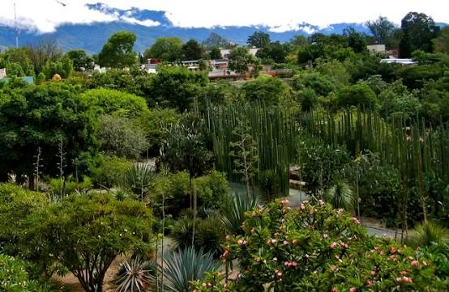

Actividad en mi red
¿Qué es lo que está pasando en mi red?
3
Encuestas activas
4
Iniciativas abietas
5
Propuestas abiertas
12
Consultas comunitarias
Encuesta
¿Cuál debería ser la prioridad ambiental de Oaxaca?
Participar
Encuesta
¿En qué debería concentrarse primero nuestra agenda ambiental?
Participar
Encuesta
Thank you! Your submission has been received!
Oops! Something went wrong while submitting the form.
Lo más reciente

Impulsa jornada de reforestación en Oaxaca
Jarumy Méndez participó con jóvenes y organizaciones locales en una jornada para recuperar áreas verdes y promover el cuidado comunitario del territorio.
Lo que está moviendo a mi comunidad
La mayoría de los vecinos se siente moderadamente segura en la colonia. Aun así, existe preocupación por la vigilancia y por algunos problemas de seguridad que ocurren con frecuencia.

Mujeres
376 personas

Participación
491 personas

Medio ambiente
617 personas

Agua
842 personas
Diagnóstico: Medio Ambiente y Territorio
Percepción General
642 participantes
37 comunidades representadas
Acceso y disponibilidad de agua
2.7/5

Manejo de residuos y limpieza
4.5/5

Conservación de áreas naturales
3.5/5
Problemas más reportados
32%
Escacez y acceso al agua
24%
Manejo inadecuado de residuos
20%
Contaminación de ríos y cuerpos de agua
15%
Pérdida de áreas verdes
9%
Incendios y deterioro forestal
Diagnóstico
El acceso al agua aparece como la principal preocupación ambiental de las personas participantes. También existe una demanda importante por mejorar el manejo de residuos y proteger los recursos naturales de las comunidades.
Trayectoria
¿Quién es y qué ha hecho antes?
Biografía
Abogada especializada en Derecho Ambiental, originaria de Oaxaca, con trayectoria en gestión pública, participación ciudadana, liderazgo social y defensa del medio ambiente. Ha trabajado desde el gobierno, organizaciones de la sociedad civil y espacios políticos en temas relacionados con sustentabilidad, desigualdad ambiental, participación de las mujeres y protección de los recursos naturales.
Experiencia Pública
2017 - 2019
Subsecretaria de Normatividad Ecológica y Gestión Ambiental — Gobierno del Estado de Oaxaca
Participó en la política ambiental estatal y en procesos relacionados con desarrollo sustentable, regulación ambiental y participación en la elaboración del Plan Estatal de Desarrollo.
Participó en la política ambiental estatal y en procesos relacionados con desarrollo sustentable, regulación ambiental y participación en la elaboración del Plan Estatal de Desarrollo.
2024
Coordinadora — Voluntariado Ambiental por Oaxaca
Trabajo ciudadano y ambiental, incluyendo acciones y posicionamientos relacionados con la crisis hídrica de Oaxaca.
Trabajo ciudadano y ambiental, incluyendo acciones y posicionamientos relacionados con la crisis hídrica de Oaxaca.
Candidaturas
2016
Candidata suplente a Diputación Local — Representación Proporcional
Partido Verde Ecologista de México (PVEM), Oaxaca.
Partido Verde Ecologista de México (PVEM), Oaxaca.
2024
Candidata propietaria a Diputación Local — Distrito 15
Coalición PAN–PRI–PRD, Oaxaca. Su candidatura fue registrada bajo acción afirmativa indígena.
Coalición PAN–PRI–PRD, Oaxaca. Su candidatura fue registrada bajo acción afirmativa indígena.
Organizaciones
2014 - hoy
Kybernus — Líder de iniciativas de impacto social
Ha desarrollado iniciativas relacionadas con ecocomunidades, Ley 3 de 3, protección animal y liderazgo.
Ha desarrollado iniciativas relacionadas con ecocomunidades, Ley 3 de 3, protección animal y liderazgo.
Voluntariado Ambiental por Oaxaca
Directora/coordinadora de iniciativas ambientales y de participación ciudadana.
Directora/coordinadora de iniciativas ambientales y de participación ciudadana.
Actualidad
Somos México — Secretaria de Medio Ambiente
Forma parte de la dirigencia nacional de Somos México como responsable de la Secretaría de Medio Ambiente.
Forma parte de la dirigencia nacional de Somos México como responsable de la Secretaría de Medio Ambiente.
Distinciones y Reconocimientos
2007
Premio Nacional de la Juventud en Oratoria — Gobierno de México
Formación
2014 - hoy
Derecho
Abogada con especialización profesional en Derecho Ambiental.
Abogada con especialización profesional en Derecho Ambiental.
2022 - 2023
Benemérita Universidad de Oaxaca
Agenda
Lo qué me importa
Ejes prioritarios
5
Propuestas Vinculadas
12
Acciones
18
Tema Principal
Medio Ambiente
Prioridades
Los temas que concentran mi agenda:

Protección y gestión del agua
Medio ambiente · Oaxaca
Medio ambiente · Oaxaca
Enfoque
Protección de recursos naturales, agua, territorio y políticas de sustentabilidad.
Postura
El acceso al agua debe garantizarse como un derecho y su gestión debe construirse con las comunidades, protegiendo las fuentes naturales y evitando su sobreexplotación.

Participación ciudadana
Eje estratégico
Eje estratégico
Enfoque
Abrir espacios para que las personas participen en decisiones y construcción de propuestas.
Postura
Las decisiones públicas deben construirse con la ciudadanía, creando mecanismos claros para escuchar, incorporar y dar seguimiento a sus propuestas.
En qué estoy trabajando
Protección y gestión del agua
Medio ambiente · Oaxaca
Medio ambiente · Oaxaca
En curso
Participación de mujeres en decisiones públicas
Igualdad · Participación
Igualdad · Participación
Impulsando
Agenda ambiental comunitaria
Territorio · Medio ambiente
Territorio · Medio ambiente
Construyendo
¿Hay un tema que debería estar en esta agenda?
Propuestas
Qué quiero cambiar?
Proyectos
Qué estoy haciendo?

En qué estoy trabajando?
Protección y gestión del agua
Medio ambiente · Oaxaca
Medio ambiente · Oaxaca
En curso
Participación de mujeres en decisiones públicas
Igualdad · Participación
Igualdad · Participación
Impulsando
Agenda ambiental comunitaria
Territorio · Medio ambiente
Territorio · Medio ambiente
Construyendo
1
Agua en donde más hace falta
166 Compromisos en total
Qué prometí hacer?
1
Agua en donde más hace falta
20
Sugieren
80
Destacan
40
Impulsan
20
Difieren
1
Agua en donde más hace falta
2
Promover la recuperación y protección de ríos, bosques y áreas naturales prioritarias de Oaxaca.
3
Defender el territorio de comunidades indígenas y afromexicanas
frente a proyectos que puedan afectar sus recursos naturales.
frente a proyectos que puedan afectar sus recursos naturales.
4
Impulsar una mayor participación de mujeres y jóvenes en las decisiones
públicas y espacios de representación.
públicas y espacios de representación.
Resultados
¿Qué logramos gracias a mi trabajo?
12
Resultados Documentados
3,480
Personas Beneficiadas
18
Comunidades Beneficiadas
7/10
Compromisos cumplidos
Captación comunitaria de agua
Percepción General
Excelente
Instalación y gestión de sistemas de captación pluvial en comunidades con problemas recurrentes de abastecimiento.
Impacto:
38
Sistemas
420
Familias
6
Comunidades
Impacto por eje
Donde se centran los resultados reportados
Medio ambiente y agua
Participación ciudadana
Mujeres y juventudes
Territorio y comunidades
5 resultados
3 resultados
2 resultados
1 resultado
En qué estoy trabajando
Protección y gestión del agua
Medio ambiente · Oaxaca
Medio ambiente · Oaxaca
En curso
Participación de mujeres en decisiones públicas
Igualdad · Participación
Igualdad · Participación
Impulsando
Agenda ambiental comunitaria
Territorio · Medio ambiente
Territorio · Medio ambiente
Construyendo
Transparencia
Ley 3 de 3
2013
2014
2015
2016
2017
2018
Declaración Patromonial
Bien
Terreno m2
Construcción m2
Operación
Registro de propiedad
Fecha
Casa
560 m2
492 m2
Contado
1030744107000000
25/10/1982
Terreno
1000 m2
Construcción m2
Donación
1070112536000000
29/01/1988
Terreno
24, 000 m2
Construcción m2
Donación
0231000205000000
08/03/1989
Departamento
211 m2
211 m2
Herencia
030-001410-00001
19/03/2001
Casa
2138 m2
46 m2
Contado
0600111424000000
27/12/2005
Casa
2547 m2
Donación
1030732603010000
08/12/2009
Casa
150 m2
Donación
1015010705030039
08/12/2011
Casa
58657 m2
Donación
0240150214000000
08/12/2011
Casa
338 m2
338 m2
Donación
0240103704000000
08/12/2011